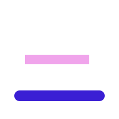

Le pain du samedi
A Saturday morning queue at a bakery on rue des Martyrs. Listen, check you understood, see how it’s really said, then write.

Today’s apéro
4 steps · about 10 minThe why behind this story
tap one to dig inCatch up
{{ catchSub }}Pourquoi ?
The grammar behind the stories, explained in English: the rule, how it shows up, how Parisians actually say it, and the usual trap.
From today’s story
Le pain du samedi · 5 notesFrom earlier lessons
Le pain du samedi
13 sentences · rue des Martyrs, 9e
{{ b.en }}
{{ focus.en }}
{{ s.en }}
Avez-vous compris ?
{{ qPrompt }}
{{ qQuote }}
{{ fbHead }}
{{ fbWrongWhy }}
{{ fbRightText }}
{{ fbRightWhy }}
{{ fbHead }}
{{ fbWrongWhy }}
{{ fbRightWhy }}
{{ fbRightText }}
{{ fbRightWhy }}
Ce qu’on écrit, ce qu’on dit
Lines from today’s story, written carefully and as you’d hear them in Paris. Both are correct French. What changes is where you use each one.
Décrivez la scène
Write 3 to 5 sentences: who is there, what are they doing, what’s in the shop? Don’t look words up. Write what you can.
{{ err }}
Corrections
{{ g.from }}
{{ c.why }}
{{ stepC.why }}
{{ corrected }}
{{ spoken }}
{{ spokenNote }}
Toutes les leçons
Every daily session so far, each with its story, quiz, spoken French and writing prompt. Written for learners between A2 and B1.
{{ g.name }}
{{ g.count }}No lessons match this filter.
Bonjour, Alex
alex.morgan@gmail.com
Stories are written for learners who get by in everyday situations and want to sound more natural. If you can follow most of a story with the English off, you’re in the right place.